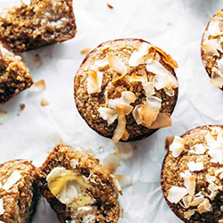
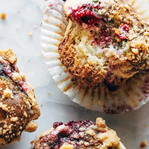
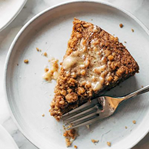

Snack recipes
To be clear, we can make almost anything a snack around here. Spare buffalo chicken taco? Couple forkfuls of cold noodle salad from the fridge? Who put this homemade oreo here? But ok, we also have a whole slew of more traditional type snackables for you to choose from.
01.Feel-Good Apple Muffins

These Apple Muffins are EVERYTHING. Wholesome and nutritious, moist and dense, perfectly but not overly sweet, and honestly divine with a little butter and honey.
02.Pecan Pie Energy Bites

These Pecan Pie Energy Bites are a cute lil' 7-ingredient miracle! Made with dates, pecans, oats, almond butter, and maple syrup, you're going to be snackin' on these all. day. long.
Click here for the recipe03.Raw Vegan Carrot Cake Bites

Raw Vegan Carrot Cake Bites that are chewy, cinnamony, cake-bally, and just the right amount of sweet. Perfect on-the-go snack for spring!
Click here for the recipe